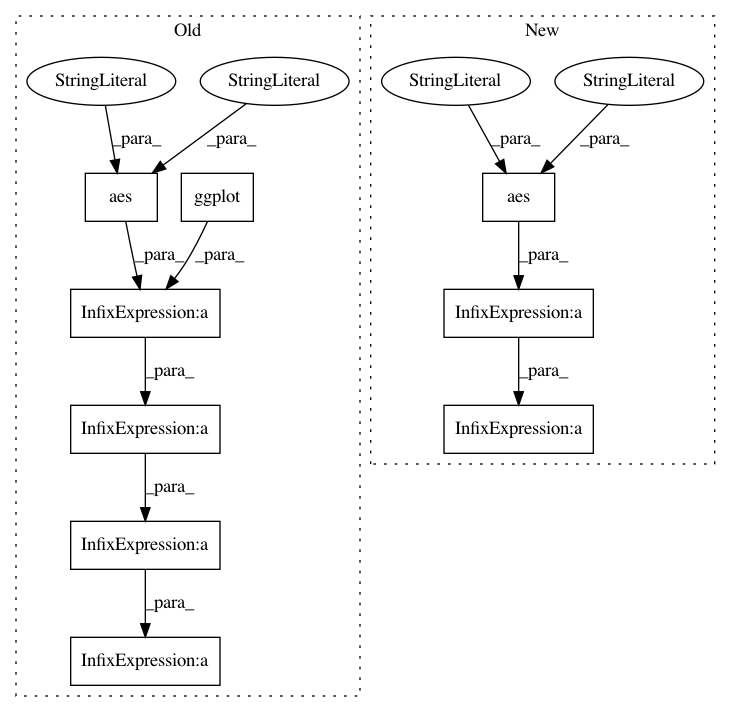

a85342eee955a8630719678d96cd96e96cdcf6b2,plotnine/tests/test_annotation_stripes.py,,test_annotation_stripes_coord_flip,#,42
Before Change
pdf = mtcars.assign(gear=pd.Categorical(mtcars.gear),
am=pd.Categorical(mtcars.am))
p = (
ggplot(pdf)
+ annotation_stripes(
fills=["//AAAAAA", "//FFFFFF", "/ǝF7FFF"], alpha=0.3
)
+ geom_jitter(aes("gear", "wt", shape="gear", color="am"),
random_state=5)
+ geom_vline(xintercept=0.5, color="black")
+ geom_vline(xintercept=1.5, color="black")
+ geom_vline(xintercept=2.5, color="black")
+ geom_vline(xintercept=3.5, color="black")
+ scale_shape_discrete(guide=guide_legend(order=1)) // work around /롽
+ coord_flip()
)
assert p == "annotation_stripes_coord_flip"
After Change
def test_annotation_stripes_coord_flip():
p = (ggplot(df)
+ annotation_stripes()
+ geom_point(aes("factor(x)", "y"))
+ geom_vline(xintercept=[0.5, 1.5, 2.5, 3.5])
+ coord_flip()
)
In pattern: SUPERPATTERN
Frequency: 3
Non-data size: 9
Instances
Project Name: has2k1/plotnine
Commit Name: a85342eee955a8630719678d96cd96e96cdcf6b2
Time: 2019-08-14
Author: has2k1@gmail.com
File Name: plotnine/tests/test_annotation_stripes.py
Class Name:
Method Name: test_annotation_stripes_coord_flip
Project Name: has2k1/plotnine
Commit Name: 61359b01bbafa7a98ad614835159705d9003476a
Time: 2018-12-28
Author: has2k1@gmail.com
File Name: plotnine/tests/test_annotation_logticks.py
Class Name:
Method Name: test_annotation_logticks
Project Name: has2k1/plotnine
Commit Name: 61359b01bbafa7a98ad614835159705d9003476a
Time: 2018-12-28
Author: has2k1@gmail.com
File Name: plotnine/tests/test_annotation_logticks.py
Class Name:
Method Name: test_annotation_logticks_coord_flip